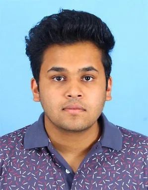
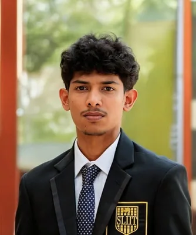

Mendis J.D.L.
IT22110084
Release Management
Focused on change-impact analysis, selective Maven build/test execution and carbon-aware release scheduling.
Email: it22110084@my.sliit.lk
Mid evaluation grade: Excellent
Research team
Four student researchers contributed to the integrated Green DevOps framework through Release, Deployment, Operations and Monitoring components.
IT22110084
Release Management
Focused on change-impact analysis, selective Maven build/test execution and carbon-aware release scheduling.
Email: it22110084@my.sliit.lk
Mid evaluation grade: Excellent

IT22149930
Deployment Stage
Focused on deployment telemetry, energy and carbon estimation, and AI-assisted strategy and scheduling decisions.
Email: it22149930@my.sliit.lk
Mid evaluation grade: Excellent
IT22281432
Operations Stage
Focused on LSTM workload prediction, carbon-aware runtime decisions and job-priority-aware Kubernetes operations.
Email: it22281432@my.sliit.lk
Mid evaluation grade: Excellent

IT22189776
Monitoring Stage
Focused on sustainability monitoring, historical baselines, statistical anomaly detection and Isolation Forest-based detection.
Email: it22189776@my.sliit.lk
Mid evaluation grade: Excellent
Green DevOps - Energy Efficient CI/CD Pipeline
Final manuscript title: An Integrated Green DevOps Framework for Sustainable Software Delivery and Operations.
Sri Lanka Institute of Information Technology
Faculty of Computing
Project ID: R26-SE-027
Jagath Wickramarathne
Senior Lecturer
Madusha Weerasooriya
Assistant Lecturer
Email: greendevops26@gmail.comil.com
Phone: +94 71 421 1115